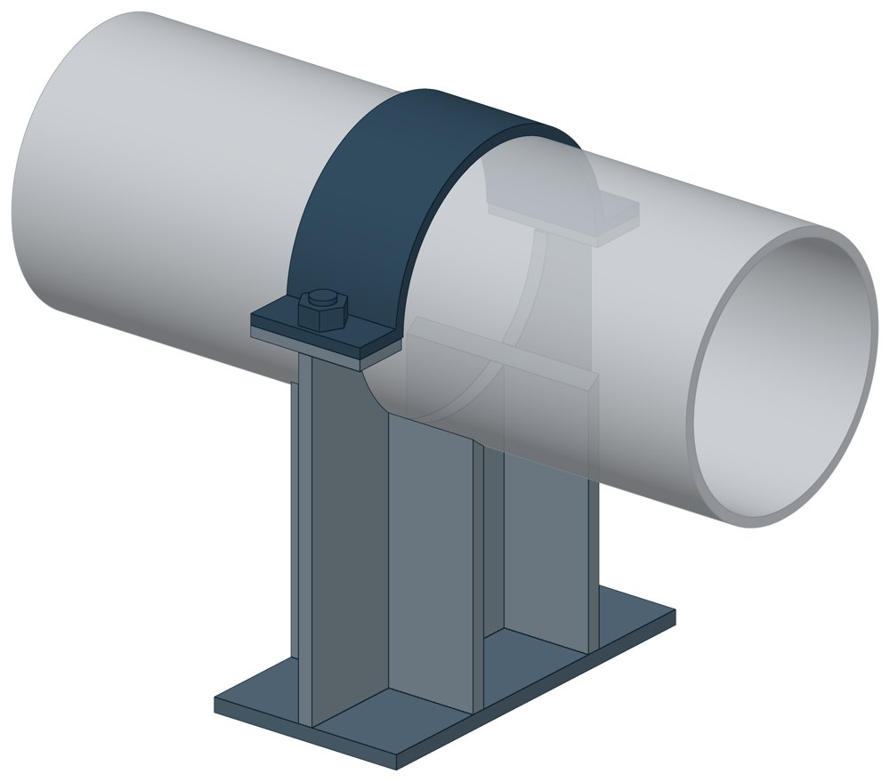

Опоры однохомутовые ОСТ 108.275.29-80
ОСТ 108.275.29-80. Dн 57–273 мм, масса 1,5–12,7 кг.

- Диаметр трубы Dн
- 57–273 мм
- Документ
- ОСТ 108.275.29-80
- Исполнений
- 9
- Масса
- 1,5–12,7 кг
- 3D-модели
- у всех исполнений (условные: общий вид по габаритам)
Таблица исполнений ОСТ 108.275.29-80
| Обозначение | Код ПРОМБУРГ | Dнмм | Высотамм | Ширина опоры трубопроводамм | Длина опоры трубопроводамм | Массакг | 3D |
|---|---|---|---|---|---|---|---|
| 10 ОСТ 108.275.29-80 | ПБ-10829-0057-1 | 57 | 122 | 102 | 60 | 1,5 | 3D |
| 11 ОСТ 108.275.29-80 | ПБ-10829-0076-1 | 76 | 128 | 116 | 60 | 1,7 | 3D |
| 12 ОСТ 108.275.29-80 | ПБ-10829-0089-1 | 89 | 135 | 133 | 60 | 1,9 | 3D |
| 13 ОСТ 108.275.29-80 | ПБ-10829-0108-1 | 108 | 151 | 157 | 80 | 2,6 | 3D |
| 14 ОСТ 108.275.29-80 | ПБ-10829-0133-1 | 133 | 171 | 192 | 85 | 3,8 | 3D |
| 15 ОСТ 108.275.29-80 | ПБ-10829-0159-1 | 159 | 178 | 220 | 85 | 4,3 | 3D |
| 16 ОСТ 108.275.29-80 | ПБ-10829-0194-1 | 194 | 249 | 258 | 105 | 8,3 | 3D |
| 17 ОСТ 108.275.29-80 | ПБ-10829-0219-1 | 219 | 267 | 298 | 120 | 9,9 | 3D |
| 18 ОСТ 108.275.29-80 | ПБ-10829-0273-1 | 273 | 281 | 354 | 120 | 12,7 | 3D |
Чтобы заказать, сообщите обозначение и код ПРОМБУРГ: +7 (499) 325-51-35, promburg@yandex.ru.
Нормативные документы
- ОСТ 108.275.29-80 Опоры скользящие однохомутовые трубопроводов ТЭС и АЭС. Конструкция и размеры — документ, по которому изготавливается изделие
Связанные позиции
- Соседний тип: ОСТ 108.275.30-80 — Опоры двуххомутовые скользящего типа
- Соседний тип: ОСТ 108.275.26-80 — Двуххомутовые неподвижные опоры
На трубу Dн 57–273 мм в каталоге
Позиции каталога с исполнениями на те же наружные диаметры трубы.
Детали трубопровода
- Заглушка стальная эллиптическая общих Dн: 8
- Отвод стальной крутоизогнутый 90°, 09Г2С общих Dн: 8
- Отвод стальной крутоизогнутый 90° общих Dн: 8
- Переход стальной концентрический общих Dн: 8
- Фланец стальной воротниковый общих Dн: 8
- Фланец стальной плоский приварной общих Dн: 8
- Отвод нержавеющий 90° общих Dн: 1
Компенсаторы
- Компенсатор сильфонный 2ОПКР общих Dн: 8
- Компенсатор сильфонный 2ОПКР (ИЯНШ) 2ОПКРИ общих Dн: 8
- Компенсатор сильфонный 2СКУ.М 2СКУМ общих Dн: 8
- Компенсатор сильфонный 2СКУ.М (ИЯНШ) 2СКУМИ общих Dн: 8
- Компенсатор сильфонный 2СКУ.ППМ 2СКУППМ общих Dн: 8
- Компенсатор сильфонный 2СКУ.ППМ (ИЯНШ) 2СКУППМИ общих Dн: 8
- Компенсатор сильфонный 2СКУ.ППУ 2СКУППУ общих Dн: 8
- Компенсатор сильфонный 2СКУ.ППУ (ИЯНШ) 2СКУППУИ общих Dн: 8
- Компенсатор сильфонный 2СКУ.ППУ/ОЦ (ИЯНШ) 2СКУППУОЦИ общих Dн: 8
- Компенсатор сильфонный фланцевый KSOF общих Dн: 8
- Компенсатор сильфонный КС общих Dн: 8
- Компенсатор сильфонный КСО общих Dн: 8
- Компенсатор сильфонный КСО (ИЯНШ) КСОИ общих Dн: 8
- Компенсатор сильфонный КСОФ общих Dн: 8
И ещё 21 тип — в оглавлении каталога.
Другие опоры и подвески
- Опорные плиты диэлектрические ТС-632 общих Dн: 9
- Опоры бескорпусные неподвижные ОБН общих Dн: 9
- Опоры приварные неподвижные скользящие ОПН общих Dн: 9
- Опоры скользящие и неподвижные ОХН общих Dн: 9
- Подвески ПГ и ПМ для горизонтальных трубопроводов ПГ, ПМ общих Dн: 9
- Опоры подвесного типа ПГВ, ПМВ общих Dн: 9
- Блок хомутовый ОСТ 24-125-113-01 общих Dн: 9
- Полухомуты для хомутовых блоков подвесок горизонтальных трубопроводов из хромо молибден о ванадиевых сталей ОСТ 24-125-114-01 общих Dн: 9
- Полухомут для хомутовых опор ОСТ 24-125-120-01 общих Dн: 9
- Хомутовые блоки для подвесок ОСТ 108.275.56-80 общих Dн: 9
И ещё 83 типа — в оглавлении каталога.
Другие типы раздела
Опоры и блоки подвесок по ОСТ 108.275.26…60-80
- Двуххомутовые неподвижные опоры ОСТ 108.275.26-80
- Опоры двуххомутовые скользящего типа ОСТ 108.275.30-80
- Катковые блоки с хомутовыми опорами ОСТ 108.275.45-80
- Блоки хомутовые ОСТ 108.275.52-80
- Хомутовые блоки ОСТ 108.275.53-80
- Хомутовые блоки с опорной балкой для подвески ОСТ 108.275.54-80
- Хомутовые блоки с опорной балкой ОСТ 108.275.55-80
- Хомутовые блоки для подвесок ОСТ 108.275.56-80
- Хомутовые блоки для подвесок трубопроводов ОСТ 108.275.57-80
- Пружинные блоки ОСТ 108.275.58-80
- Сдвоенные пружинные блоки ОСТ 108.275.59-80
- Опорные пружинные блоки ОСТ 108.275.60-80
Частые вопросы
По какому диаметру подбирать — Dн или Ду?
По наружному диаметру трубы Dн: именно он стоит в таблицах серии. Ду — условный проход, округлённая величина: Ду 100 соответствует Dн 108. В заявке указывайте Dн и толщину стенки трубы.
Из какой стали изготавливаются опоры?
По рабочим чертежам серии листовые детали — Ст3сп5 ГОСТ 14637-89, хомуты из круга — сталь 20 ГОСТ 1050-88. Для районов с низкой расчётной температурой воздуха применяется низколегированная сталь, в том числе 09Г2С; размеры опор при этом не меняются. В заявке укажите расчётную температуру наружного воздуха.
Почему часть поверхностей опоры не окрашена?
Поверхности под приварку к трубе и к несущей конструкции оставляют без краски, иначе шов получится некачественным. Их консервируют смазкой, которую снимают перед сваркой.
Что указать в заявке, чтобы получить цену без уточнений?
Обозначение с номером исполнения или код ПБ, количество, Dн и стенку трубы, расчётную температуру наружного воздуха, покрытие, город доставки и желаемый срок. Кнопка «В заявку» в таблице собирает спецификацию, которую можно выгрузить в Excel или отправить письмом.